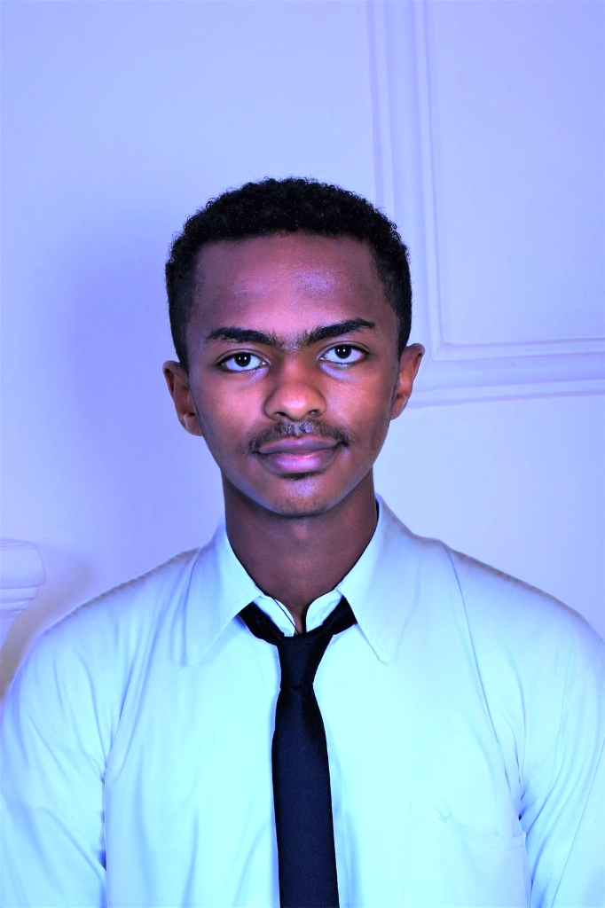

Nathan Behailu

Summary
I am a highly motivated and accomplished individual with a strong background in computer science.
With a Bachelor of Arts in Computer Science, along with minors in Economics and Mathematics, I have developed
a diverse skill set that includes game development, virtual reality, and programming languages such as C++ and Python.
In addition, I also have a proven track record of success in various leadership roles, including founding a mentoring program and serving as
the Head of Academic Affairs for the Student Government. I am dedicated to continuous learning and is passionate about
leveraging technology to solve complex problems.
Education
New York University Abu Dhabi, Abu Dhabi, UAE
Bachelor of Arts in Computer Science, Minor in Economics and Applied Mathematics.
Work Experience
-
Founder - Enlight Mentors
Mar. 2021 – Present
- Provided personalized mentor ship and guidance to more than 20 students on scholarship applications, essay
writing, and standardized test preparation.
- Enabled two-thirds of students to be either accepted or wait listed to their desired universities.
-
Head of academic affairs | Student Government - BeteSeb Academy
Sep. 2019 – Nov. 2021
- Worked with school administration to create a new system for class scheduling that better accommodated student needs and preferences.
- Initiated the creation of a study group focused on specific subjects, with academically-gifted students providing support to struggling students,
leading to an improvement in their academic performance and grades.
- Partnered with math faculty to launch a an online mathematics program held on weekends, featuring live teacher support to help students tackle challenging
exercises.
-
Board member (1 year), President (2 years) | BeteSeb Tech Club
Oct. 2018 – Nov. 2021
- Collaborated with alumni to organize and facilitate a summer course on the basics of Arduino, sensors, and circuits for high school students.
- Organized and executed a tech expo featuring student projects, showcasing their work to a diverse audience of students, faculty, and guests.
- Conducted regular assessments and evaluations of club activities, membership, and finances, and presented them to the school administration when required.
- Organized and facilitated guest speaker events featuring technology industry professionals, providing students with valuable insights and advice on career paths and industry trends.
Projects
-
Cosmic Conquest | Python, Processing
Apr. 2023 – May 2023
- Developed a space battle themed game using python with 1000+ lines of code in processing environment.
- Gained experience in game development principles, including game design, user interface development, and gameplay mechanics.
- Presented game at ”Intro to CS Arcade” exhibition and received recognition from professors and fellow students for the quality and craftsmanship of the game.
-
AON Vitual Estate | C#, Unity, Oculus Quest 2
Aug 2022 – Dec 2022
- Developed an immersive 360 virtual tour of real estate properties using Unity and C#.
- Utilized Unity’s features such as Panaromic imagery, animation, and audio to create a realistic and engaging user
experience.
- Implemented interactive features such as hotspots, pop-ups, and clickable buttons to enhance user engagement and
interest.
- Delivered the project within the designated time and budget constraints, and received positive remarks from
professors and faculty members.
Technical Skills
Languages: C++, Python
Developer Tools: CLion, Github, PyCharm, VS Code, Visual Studio, XCode